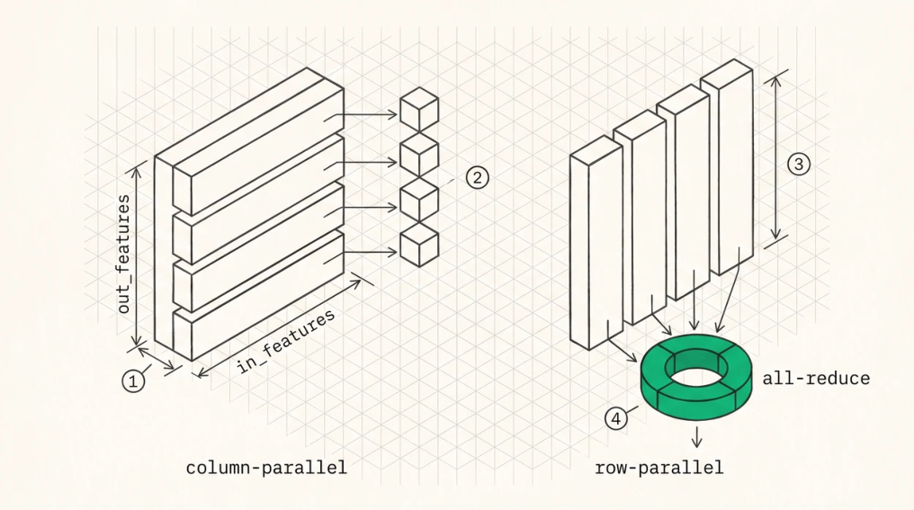

Tensor, Pipeline, and Expert Parallelism
CHAPTER 29 · TENSOR, PIPELINE, AND EXPERT PARALLELISM
Tensor parallelism
Tensor parallelism, from Megatron-LM, splits each weight matrix across GPUs so every GPU computes a partial result for every token, combined by all-reduce.
Using the stored-layout convention from Chapter 21, where weights are (out_features, in_features) and y = x·Wᵀ , column-parallel splits the output features on stored axis 0, so rank i holds a contiguous row range and produces a slice of the output with no communication needed for the projection itself, while row-parallel splits the input features on stored axis 1, so rank i holds a column range and consumes a slice of the input, producing a partial sum that has to be all-reduced .
Megatron’s insight is to alternate them so a column-parallel layer’s sharded output feeds a row-parallel layer’s sharded input directly, with no communication in between. QKV projections are column-parallel, so each rank owns whole attention heads. The output projection is row-parallel, costing one all-reduce. Gate and up projections are column-parallel. The down projection is row-parallel, costing the second allreduce. Two per layer, and the intermediate activations never need gathering.
CHAPTER 29 · TENSOR, PIPELINE, AND EXPERT PARALLELISM

O
1Stored weights have shape (out_features, in_features). Fix that convention once and use it everywhere, because the mathematical names refer to the opposite axis of the stored matrix and that mismatch is the most common bug in a tensor-parallel loader.O
2Column-parallel splits the output features, which is axis 0 of the stored matrix. Each rank gets a contiguous row range, so its slice is one contiguous byte range and its output is simply a slice of the answer. No communication.O
3Row-parallel splits the input features, axis 1. Each rank gets a column range from every row, so the slice is strided and the loader has to coalesce or pre-shard.O
4Every rank now holds a partial sum over its own slice, so the results have to be all-reduced. Alternating the two forms is what keeps it to two collectives per layer.
TP imposes constraints worth knowing before you plan a deployment. The number of attention heads has to divide by the TP degree, so for a model with 4 KV heads, TP greater than 4 means KV heads get replicated across ranks rather than split, which multiplies KV memory. That’s a real and frequently encountered limit, since Qwen3-235B at TP=8 replicates each KV head across two ranks. Intermediate sizes have to divide too, and MoE expert dimensions have to divide by whatever parallelism the experts use.
The TP decode path
Each rank loads its slice at startup (Chapter 21), computes its partial result for every token, and two allreduces per layer combine partials so every rank ends the step with identical activations.
Because every rank has to produce identical results, TP is tightly synchronous and the slowest rank sets the pace every single step. That makes it sensitive to straggler effects, where a rank on a busier NUMA node or one whose clocks throttle first slows everyone, and it’s also why TP beyond a single node is usually a bad idea. Two all-reduces per layer over InfiniBand is a different order of magnitude from the same thing over NVLink or xGMI.
CHAPTER 29 · TENSOR, PIPELINE, AND EXPERT PARALLELISM
Sequence and context parallelism
TP shards the hidden dimension, and a complementary axis shards the token dimension.
Sequence parallelism shards the activations of the elementwise and normalisation regions, which TP leaves replicated, converting the all-reduce at each TP boundary into a reduce-scatter and all-gather pair. Communication volume is unchanged while replicated activation memory drops by the TP degree, which matters for long-context prefill where those activations are large.
Context parallelism shards the sequence for attention itself, so each rank holds part of the KV cache and attention proceeds by passing partial results or KV blocks between ranks, which is ring attention and its relatives. That’s what makes contexts too large for one GPU’s KV cache tractable, and it’s increasingly relevant as engines add decode-time context parallelism to split a single very long sequence’s KV across ranks.
The trade is that context parallelism converts a memory problem into a communication problem, and for decode, where each token reads the entire cache, the communication is proportional to cache size rather than token count. It pays when the cache doesn’t fit and the alternative is not serving the request at all.
Pipeline parallelism
Pipeline parallelism splits layers across GPUs, with ranks holding consecutive ranges and passing activations forward.
GPU 0: layers 1–24 → send hidden state → GPU 1
GPU 1: layers 25–48 → send → GPU 2
GPU 2: layers 49–72 → send → GPU 3
GPU 3: layers 73–94 → logitsCommunication is one point-to-point send per stage boundary, a few tens of kilobytes, far less than TP’s all-reduces. The cost is the pipeline bubble , since with a single in-flight batch stage i+1 idles while stage i works and utilisation is 1/P.
For inference the bubble gets filled with other requests , because continuous batching means different micro-batches occupy different stages simultaneously. A well-fed pipeline achieves high utilisation and a lightly loaded one doesn’t, which makes PP a throughput technique rather than a latency one, and also the natural choice for crossing node boundaries since it needs far less bandwidth than TP.
Expert parallelism
Chapter 24 covered the mechanics. In the parallelism taxonomy, EP shards the expert dimension, communicates by all-to-all twice per layer with data-dependent sizes, and gets combined with TP or DP for the attention layers, which have no expert structure.
One pattern is worth naming because it’s now standard in large MoE deployments, data-parallel attention with expert-parallel FFN . Attention is replicated per rank with each rank handling different sequences, so there’s no attention all-reduce at all and the KV cache isn’t replicated, while the FFN uses EP across the same ranks and the all-to-all also serves to redistribute tokens between the two regimes.
CHAPTER 29 · TENSOR, PIPELINE, AND EXPERT PARALLELISM
That avoids TP’s KV-head divisibility problem entirely, which is why very large MoE models are often served this way.
Choosing a strategy
| STRATEGY | COMMUNICATION PER LAYER | SCALES | USE WHEN |
|---|---|---|---|
| TP within a node | 2 all-reduces (small) | Latency and memory | Model fits one node, latency matters |
| TP + SP | reduce-scatter + all-gather | Also activation memory | Long-context prefill |
| Context parallel | KV or partials between ranks | Context length | One sequence’s KV exceeds a GPU |
| PP across nodes | 1 send per boundary | Memory across nodes | Model exceeds a node, throughput workload |
| EP for MoE | 2 all-to-alls (variable) | Expert capacity | Many experts |
| DP attention + EP | all-to-all only | Both, avoids KV | Large MoE serving |
| FFN | replication |
For a single node the default is TP across all GPUs, since the small all-reduces are cheap on an intranode fabric and it minimises latency. As the model or context grows past a node, PP or EP crosses the network boundary because they demand less of it.
Fusing the all-reduce with what surrounds it
The all-reduce is followed immediately by a residual add and an RMSNorm, and done naively that’s three kernels and three passes over the activation.
Fused, the residual add becomes the reduction’s epilogue, with each rank adding its reduced chunk into the residual buffer in place, and the norm runs once on the result. That saves two launches and two HBM round-trips per all-reduce, which is four per layer and 376 per token for a 94-layer model.
The subtlety is that after a fused reduce-scatter the residual is only valid for each rank’s own chunk until the all-gather completes, so the norm has to be placed correctly relative to the gather, or computed on the sharded chunk in the sequence-parallel formulation, which is exactly why sequence parallelism composes so well here.
Key Concept
TP splits weights and pays two small all-reduces per layer, which makes it the right default within a node, constrained by head-count divisibility that forces KV-head replication when TP exceeds the KV head count. Sequence parallelism shards the activations TP leaves replicated, and context parallelism shards the KV cache itself. Pipeline parallelism costs one small send per boundary and needs a full pipeline to avoid bubbles, which makes it a cross-node throughput technique. Data-parallel attention with expert-parallel FFN is the standard shape for very large MoE. And fuse the residual add into the collective’s epilogue.
CHAPTER 29 · TENSOR, PIPELINE, AND EXPERT PARALLELISM
Exercises
Qwen3-235B has 4 KV heads. At TP=8, what happens to KV cache memory, and what’s the total KV footprint at 128K context in FP8 across the node? Compare with a DP-attention arrangement.
Derive the pipeline bubble fraction for P stages and M in-flight micro-batches. How many concurrent requests does a 4-stage pipeline need to reach 90% utilisation?
Explain why sequence parallelism has the same communication volume as plain TP with lower activation memory.
Build: implement column-parallel and row-parallel linear layers with an all-reduce for TP=2. Verify bitcomparable output against the single-GPU model, then measure the all-reduce’s share of step time.